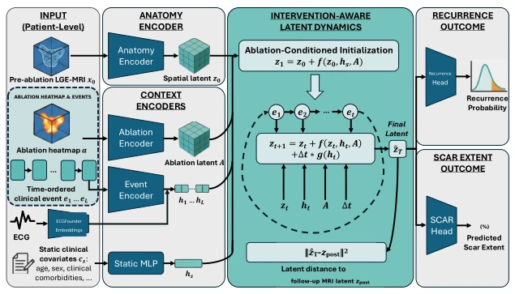
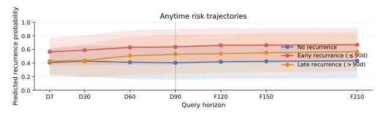

This paper attempts to address the recurrence prediction problem after cardiac ablation using world models. The approach is quite bold, treating clinical trajectories as dynamic evolutionary processes rather than static mappings. The model can update risk based on irregular events during the blank period, offering an advantage over simply examining baseline or post-event MRI. However, do not get too excited; a complete data volume of N=91 is simply a "microcosm" in medical AI, and no matter how impressive the internal cross-validation is, it cannot withstand the rigorous testing of external data. Furthermore, not using follow-up MRI for inference but using follow-up MRI for training supervision raises suspicions of cheating in an "open-book exam" (although the authors claim it is training-only supervision). Ablation experiments indicate that event tokens are important, but input editing represents mere correlation detection rather than causality, so do not expect it to guide clinical decision-making. In summary, it is an interesting prototype of a medical world model, but it is still far from practical deployment.
Existing medical imaging models mostly treat postoperative outcomes as a single-step mapping from baseline measurements to future endpoints [7], ignoring the dynamics of the rehabilitation process. After atrial fibrillation ablation, there is a 90-day "blank period," during which medication adjustments, electrical cardioversion, or repeated interventions occur at irregular times, and these events will alter risk assessment in real-time. Traditional methods either rely solely on preoperative MRI [13] or ignore postoperative dynamic records, failing to capture the evolution of risk over time. Furthermore, although frameworks such as SOFA can simulate scars, they do not couple the blank period event sequence with anatomical state evolution [7]. This study aims to address this gap by employing an intervention-aware model to leverage irregular postoperative records to provide clinical evidence for long-term recurrence risk, achieving risk prediction that can be updated at any time, rather than a static score at a single point in time.

Fig. 2. Overview of the proposed intervention-aware clinical world model. Pre-ablation LGE-MRI is encoded into a spatial latent state z0. Static covariates, the ablation heatmap, and time-ordered clinical events with ECGFounder embeddings condition ablation-conditioned initialization, latent updates, and elapsed-time drift. The final latent ˆzT is matched to the training-only follow-up latent zpost = Eθ(xpost) and predicts recurrence probability and scar extent.
The overall process is divided into three parts: state initialization, dynamic evolution, and prediction head. First, a frozen VAE encodes preoperative LGE-MRI into a 3D spatial latent state $z_0$. Next, an intervention-aware mechanism is introduced: ablation geometry maps, static covariates, and clinically sorted events (medications, cardioversion, repeat surgeries) are encoded as Tokens, combined with ECGFounder embeddings and normalized time, generating context vectors through a Transformer. State evolution utilizes a 3D residual CNN and MLP drift term, updating the latent state upon encountering an event or time step, simulating dynamic changes in anatomical structures. Training objectives comprise three components: latent state matching (forcing predicted states to approximate the latent representation of follow-up MRI), recurrence classification (BCE), and scar extent regression (Huber Loss). During inference, only preoperative MRI, ablation maps, and event sequences are needed, without requiring follow-up MRI intensity; risk queries across multiple time scales are achieved by modifying the terminal time token.

Fig. 3. Anytime risk trajectories. Mean±SD for early recurrence (≤90d, n=32), late recurrence (>90d, n=14), and no recurrence (n=45). D: observed-day; F: no-new- event horizons.
Experiments are based on the DECAAF-II dataset, with 91 patients with complete records used for full model evaluation, and 258 patients without available ablation geometry maps used for auxiliary validation. Comparison baselines include static models, Post-MRI-only, ECGFounder, SOFA, and sequence models (GRU/LSTM/Transformer). In the main results, the proposed model achieved an AUROC of 0.756 and AUPRC of 0.777 in recurrence prediction, significantly outperforming the LSTM baseline (+0.103/0.090). The scar prediction MAE was 2.971 percentage points; although slightly better than the follow-up MRI baseline, the difference lies within the fold fluctuation range. Ablation experiments show that removing events or latent matching loss results in a significant drop in AUROC, confirming the effectiveness of the dynamic evolution mechanism. Input editing experiments indicate the model is sensitive to blank period events, but the distribution is right-skewed, suggesting heterogeneity in risk correction.